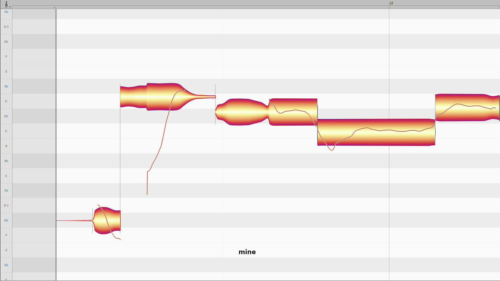
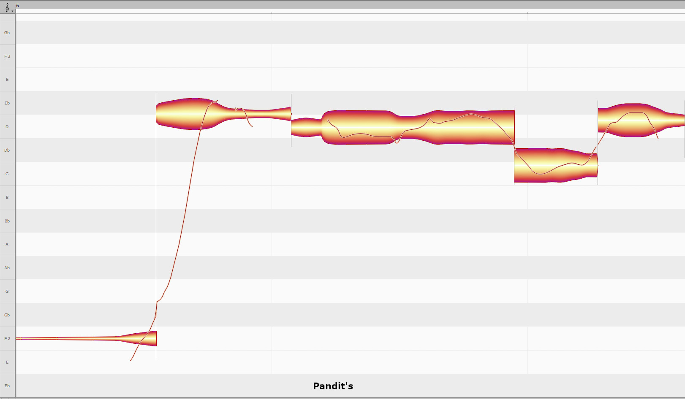
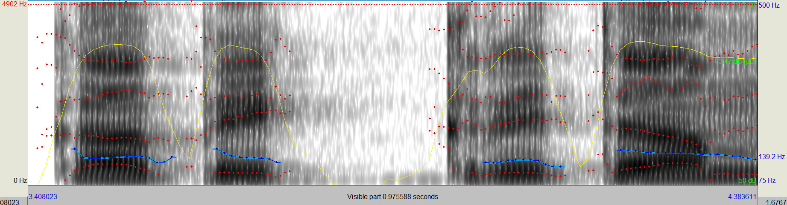
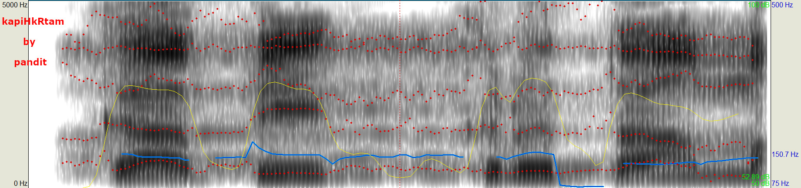

imitation by me ( below)
vikSamANas chant by pandit ( wrong) ( below)
vIkSamANastatolaGkAm kapiKkRtamanorathaH |
vardhamAnasamutsAhaH kAryazeSamacintayat ||
My Version : 6

My Version : 5
My Old Version 3
pandit's version


https://www.youtube.com/watch?v=aYywTB638w8&t=8

This page is is only for educational, research, non-profit and non-commercial usage only. This page is under construction - credit due.